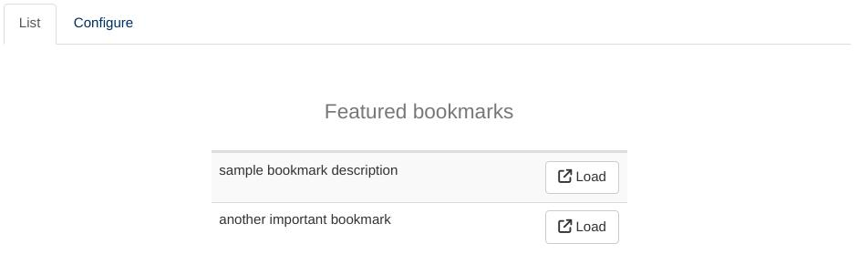
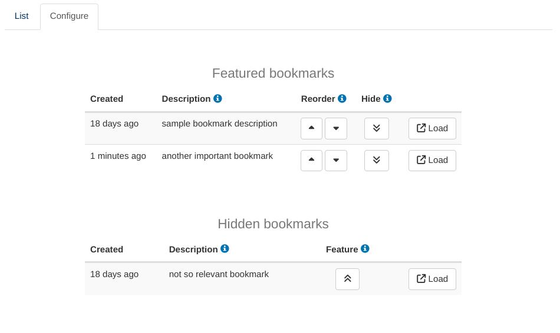

Bookmark Manager module
manual.RmdThe Bookmark Manager module provides a centralized view of all server bookmarks created by users of a DaVinci app. It can also be used by any shiny application configured with shiny::enableBookmarking(store = 'server'), shiny::shinyApp(..., enableBookmarking = 'server') or equivalent mechanisms.
The module offers two tabs (“List” and “Configure”). Most users are only expected to interact with the former:  This listing contains a curated subset of all bookmarks available for the application. It is functionally equivalent to users sharing bookmarks and storing them on their browsers but may be more convenient for close-knit groups of users that want a unified repository of bookmarks.
The second tab allows to review all available bookmarks, describe them, sort them and decide which to make available on the ‘List’ tab of the module: 
The “Hidden Bookmarks” table does not currently offer a sorting mechanism and instead sorts them from newest to oldest. The expected workflow is for users to create a bookmark, transition to the ‘Configure’ tab, find it on top of the Hidden table, describe it and move it onto the Featured table. The expectation is that non-featured bookmarks of a certain age become less and less relevant and this default behavior reflects that and takes advantage of it to simplify the module interface.
Usage
Adding the Bookmark Manager module to a DaVinci application usually requires appending a single extra line to the module_list parameter of dv.manager::run_app:
"Bookmarks" = dv.bookman::mod_bookman()This is how it would look like in context:
app <- function() {
dataset <- ...
module_list <- list(
"Tab 1" = mod_1(module_id = "mod1"), ...,
"Bookmarks" = dv.bookman::mod_bookman()
)
dv.manager::run_app(
data = list("DS" = dataset),
module_list = module_list,
filter_data = "adsl"
)
}Notice that the call to mod_bookman does not require a module ID. That is because it does not make sense to include it more than once inside an application and a default ID is enough. The module signature still offers the possibility of changing that default ID:
mod_bookman <- function(module_id = "_bookman", bookmark_dir = NULL)The second parameter to the module, bookmark_dir, overrides the auto-detection of the server bookmark folder.
Internals
The module collects information from the standard server bookmark files input.rds and values.rds and writes an index of featured bookmarks and descriptions to the root of the bookmark folder, under the file bookmark_info.rds.
The name and location of that file are part of the documented interface of this module because they are relevant for some aspects of the life cycle of an application, such as backups. The contents of that file should be considered unspecified for the purposes of this manual, except to say that they will remain backwards compatible. Any bookmark_info.rds file created with an earlier version of the Bookmark Manager module will work as expected on newer versions but the converse is not guaranteed.